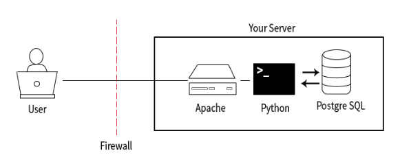

Web Application Servers
1. Introduction
Now that you have a shiny new server that is safe and secure, it’s time to turn it into a web application server! By the end of this lesson you will accomplish the following:
- Use the Apache HTTP Server to respond to HTTP requests and serve a static webpage
- Configure Apache to hand-off specific requests to Python providing the ability to develop dynamic websites
- Setup PostgreSQL and write a simple Python application that generates a data-driven website
At the end of this lesson, the response cycle will resemble this:
2. Vagrant Prerequisites
If you’re using the Vagrant virtual machine from earlier in this course you will need to make a slight modification to the configuration of this machine to make your web server accessible. This step is not related to configuring a web server in general, it’s just a condition of our current environment. You would not need to complete this step if you were configuring a machine from a cloud provider like Amazon Web Services.
Open the Vagrantfile in your project
directory and look for the following section near lines 20-23:
# Create a forwarded port mapping which allows access to a specific port
# within the machine from a port on the host machine. In the example below,
# accessing "localhost:8080" will access port 80 on the guest machine.
# config.vm.network "forwarded_port", guest: 80, host: 8080
Uncomment the last line:
config.vm.network "forwarded_port", guest: 80, host: 8080
Save the file and start your Vagrant virtual machine using the
vagrant up command. If your virtual machine is
currently running, you can reload it using the vagrant
reload command.
This configuration change will setup port forwarding from port
8080 on the host machine (your computer) to the guest machine
(your Vagrant virtual machine) when your virtual machine is
running. This will allow you to access your web server using the
URL http://localhost:8080.
Compatibility note
On some Windows systems, you will need to add one more argument to the line to ensure that the VM network connects to the correct interface on your host computer:
config.vm.network "forwarded_port", guest: 80, host: 8080, host_ip: "127.0.0.1"
3. Installing Apache
You’ll setup your web application server one piece at a time,
testing each as you progress. The first step is to get your
server responding to HTTP requests. To do this, you’ll use Apache
HTTP Server - the most commonly installed web server on the
Internet with roughly 47% market share.
Install Apache using your package manager with the following
command: sudo apt-get install apache2 Confirm Apache
is working by visiting http://localhost:8080 in your browser. You
should see the following page:
Apache, by default, serves its files from the
/var/www/html directory. If you explore this directory you
will find a file called index.html and if you review
that file you will see it contains the HTML of the page you see
when you visit http://localhost:8080.
Exercise
Update the index.html to simply display
“Hello, World!” and refresh your browser to see your new page.
4. Installing mod_sgwi
When Apache receives a request it has a number of ways it can
respond. What you’ve seen thus far is the simplest method of
operation, Apache just returns a file requested or the
index.html file if no file is defined within the URL.
But, Apache can do so much more! You’ll now configure Apache to
hand-off certain requests to an application handler - mod_wsgi.
The first step in this process is to install mod_wsgi:
sudo apt-get install libapache2-mod-wsgi.
You then need to configure Apache to handle requests using the
WSGI module. You’ll do this by editing the
/etc/apache2/sites-enabled/000-default.conf file.
This file tells Apache how to respond to requests, where to find
the files for a particular site and much more. You can read up on
everything this file can do within the Apache documentation.
For now, add the following line at the end of
the
line: WSGIScriptAlias / /var/www/html/myapp.wsgi
Finally, restart Apache with the sudo apache2ctl
restart command.
5. Your First WSGI Application
WSGI is a
specification that describes how a web server communicates with
web applications. Most if not all Python web
frameworks are WSGI compliant, including Flask and Django; but to
quickly test if you have your Apache configuration correct you’ll
write a very basic WSGI application.
You just defined the name of the file you need to write within
your Apache configuration by using the WSGIScriptAlias
directive. Despite having the extension .wsgi
, these are just Python applications. Create the
/var/www/html/myapp.wsgi file using the
command sudo nano /var/www/html/myapp.wsgi. Within this file,
write the following application:
def application(environ, start_response):
status = '200 OK'
output = 'Hello World!'
response_headers = [('Content-type', 'text/plain'), ('Content-Length', str(len(output)))]
start_response(status, response_headers)
return [output]
This application will simply print return Hello World!
along with the required HTTP response headers. After
saving this file you can reload
http://localhost:8080 to see your application run in
all its glory!
6. Installing PostgreSQL
Most web applications require persistent data storage,
typically using a database server. You will now install
PostgreSQL to server your data using the command
sudo apt-get install postgresql.
Since you are installing your web server and database server on
the same machine, you do not need to modify your firewall
settings. Your web server will communicate with the database
via an internal mechanism that does not cross the boundaries of
the firewall. If you were installing your database on a
separate machine, you would need to modify the firewall settings
on both the web server and the database server to permit these
requests.